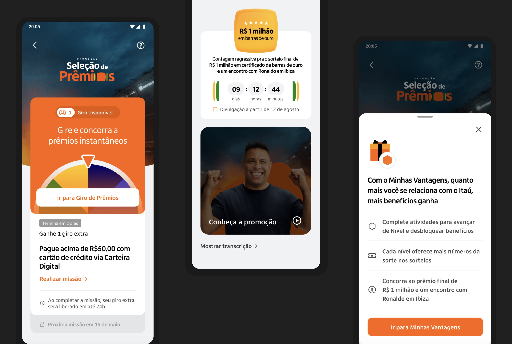
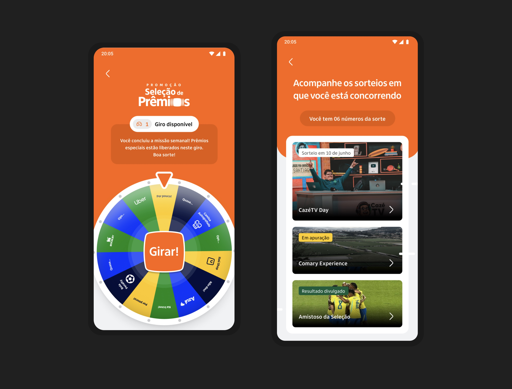
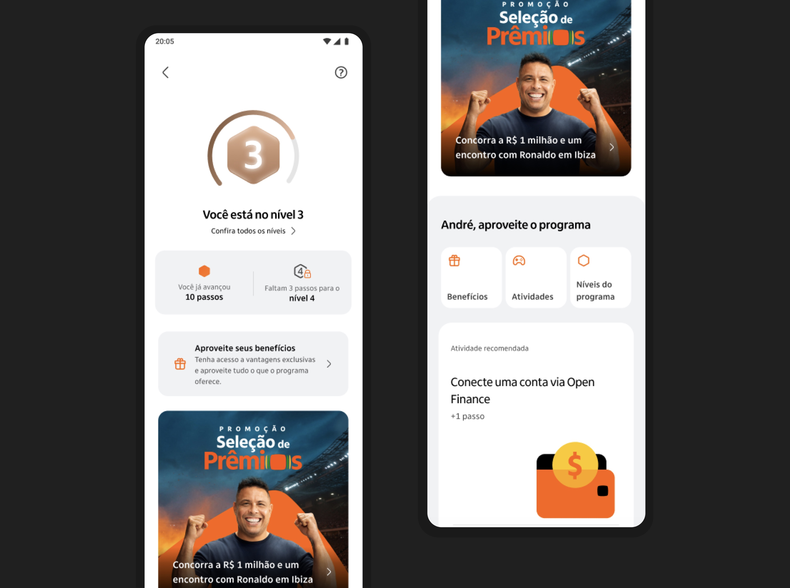
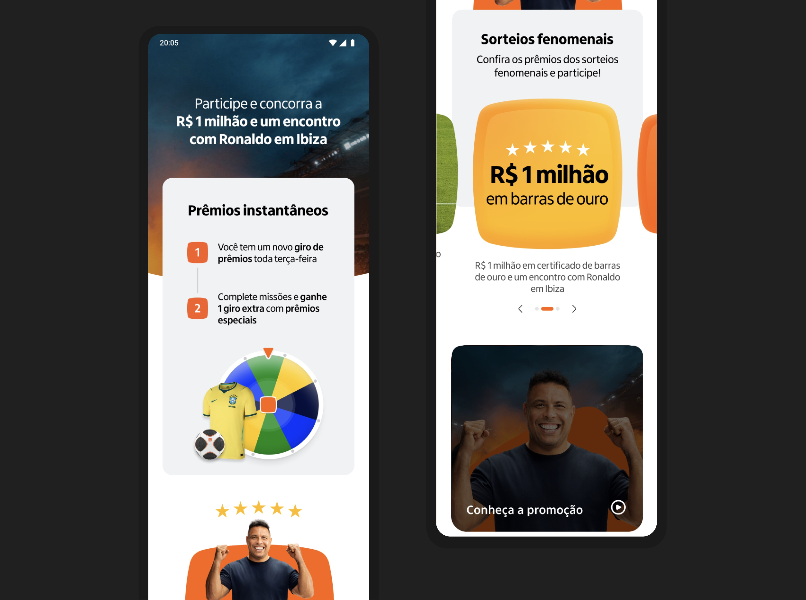

What I did
- Game mechanic design with product, engineering and the sweepstake partner
- Gamification research into what makes people return to a game
- Interaction design for the weekly spin, missions and prize journeys
- Content design with legal, turning compliance into plain language
- Coordination across legal, marketing, engineering and brand assets
- Review with superintendents and directors through to launch
Outcomes
4.3MM
Customers enrolled in the campaign
1MM
Of those net-new to Minhas Vantagens
11MM
Prize spins executed
4.6MM
Missions completed
86%
Campaign opt-in conversion rate
580
Support cases across the whole campaign — low friction relative to volume
Overview
Itaú ran a promotional campaign across the 2026 World Cup, built inside Minhas Vantagens and fronted by Ronaldo. Weekly missions earned lucky numbers and spins — register a Pix key, connect Open Finance, set up automatic payments, start investing.
Those entered customers into instant prizes and headline draws — up to a million reais in gold bars, a trip, dinner with Ronaldo. More than twenty products across the bank fed the mission system.
The hard part was never the interface. A spinning wheel with a gold jackpot is, visually, the language of gambling. This had to read as the opposite — a bank rewarding customers who were already its own.
Three decisions carried that: nothing was ever staked, every customer got a lucky number just for being a client, and the visual language stayed close to the bank’s restrained voice rather than the category’s loud default.

2 takeaways
- 01Rewarding, never wagering
- 02Borrowed from games, not from casinos
01
Rewarding, never wagering
The mechanic was built so a customer could never lose anything. Chances were earned by doing something, never bought or bet. That rule did more for trust than any visual reassurance could, and it made every screen easier to write: there was never a loss to explain away.
It is also why we resisted the category’s pull toward flashing, jackpot-styled design. Staying restrained cost some excitement and bought what mattered — a customer believing the prize was real.

02
Borrowed from games, not from casinos
We studied what brings people back to a game: a weekly rhythm, an immediate reward, and a slower progression underneath. Level in the programme meant more lucky numbers, so a long-standing customer saw their relationship reflected in their odds.
Launching to the whole base at once meant a spike, not a curve. What loads first, what can wait, what a customer sees when something is slow — settled with engineering and marketing ahead of time. The platform held. Reach on campaign communications ran to 19.7MM, and enrolment came in at roughly ten times the previous internal benchmark.
- 18×
- Screen views, within 50 minutes
- 4.8×
- Total requests, within 50 minutes
- 5×
- Requests per second, within 50 minutes
- 3–3.8×
- Peak burst in a 3-minute window (21:40)
- 13×
- Opt-ins in under an hour, at the 4h mark


What made it work
- Reused the existing LE3 solution for partner campaigns rather than building new
- Near-real-time mission data over Kafka, which made new product types possible inside the programme
- The Platform Evolution Program ran ahead of launch to close resilience, security and scalability gaps
- Devin used for structural delivery and bug fixes
- Targeted multichannel campaigns and non-QR advertising both drove opt-in growth — conversion held across acquisition paths